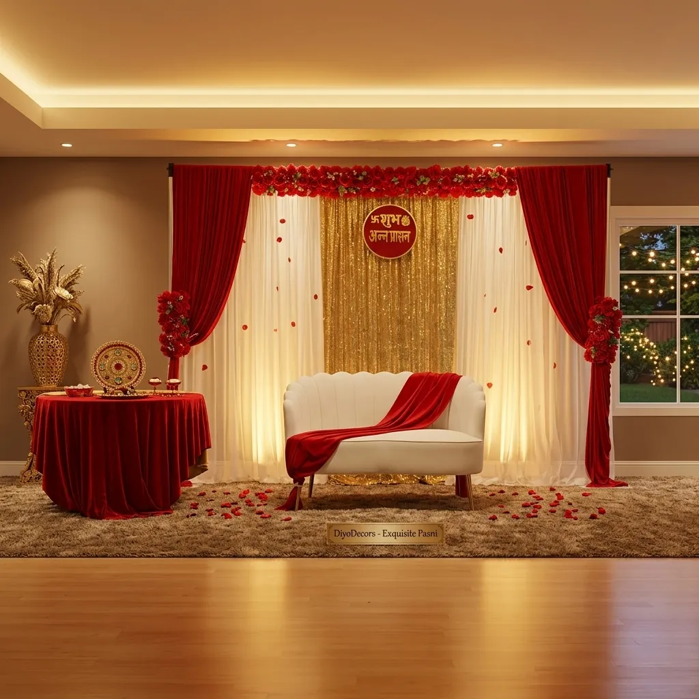
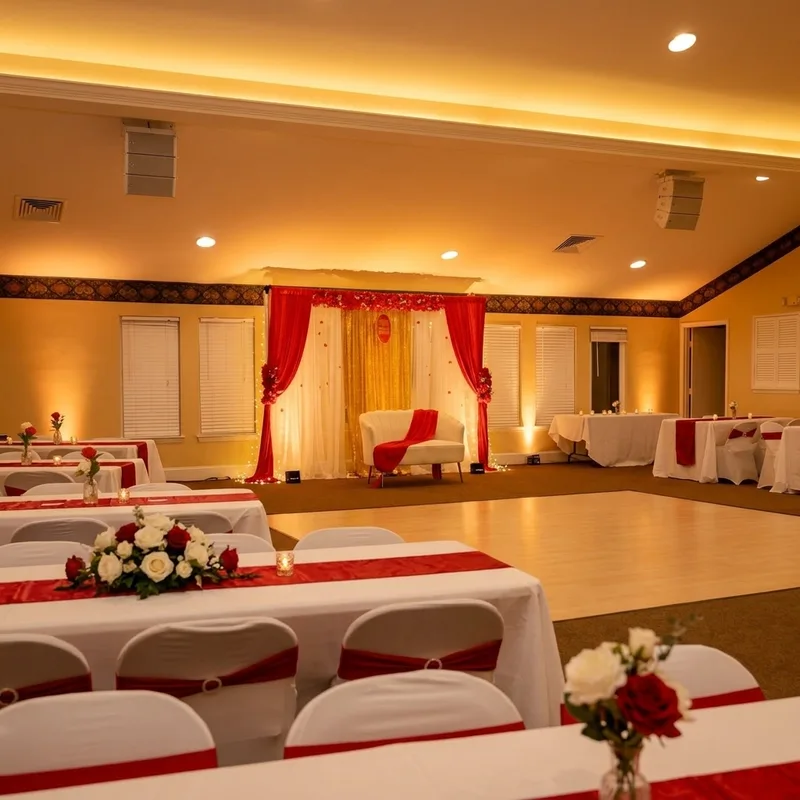
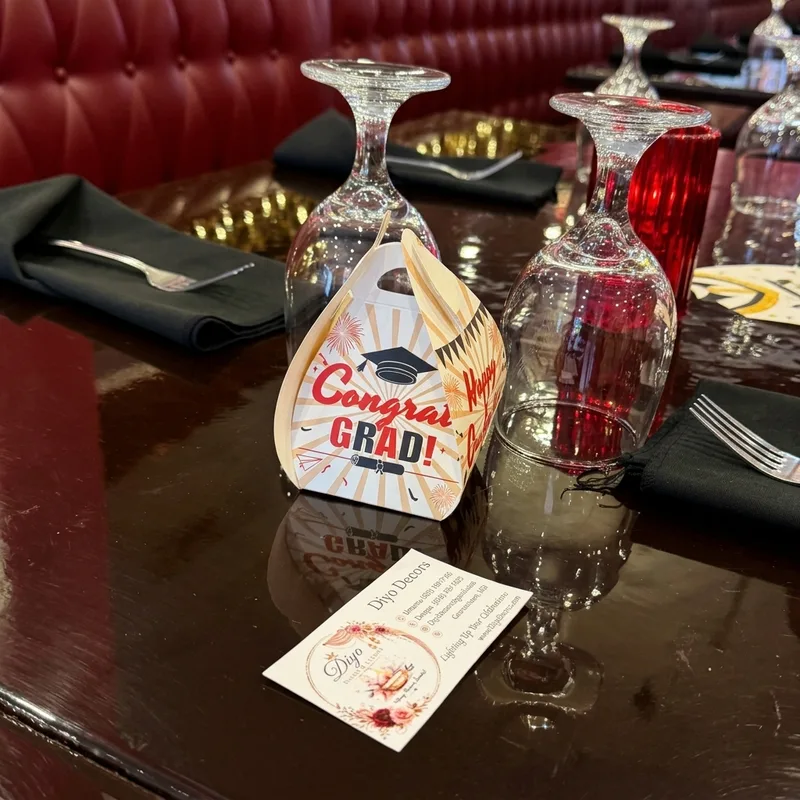
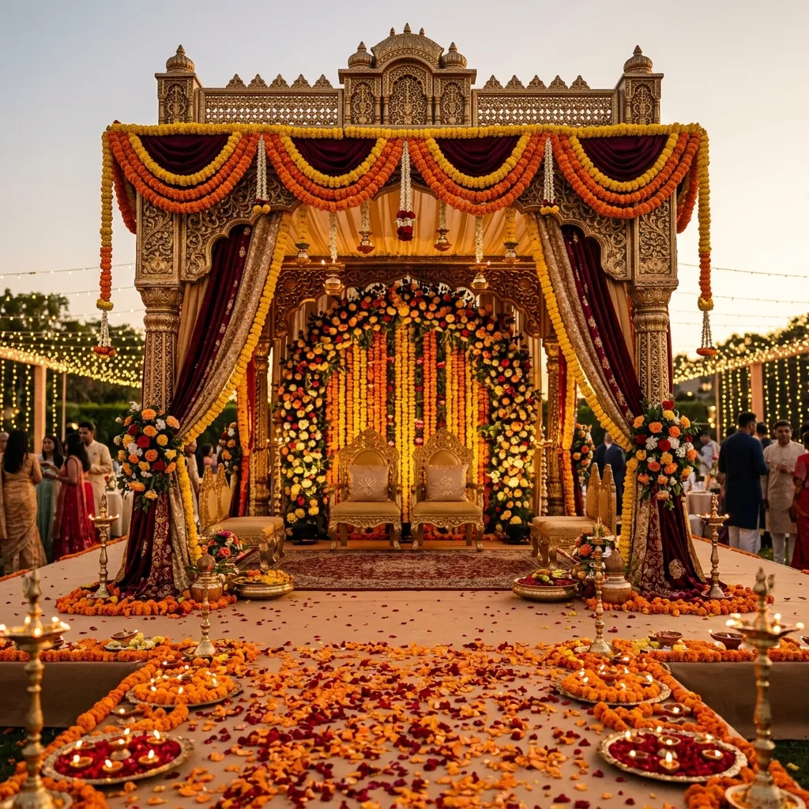
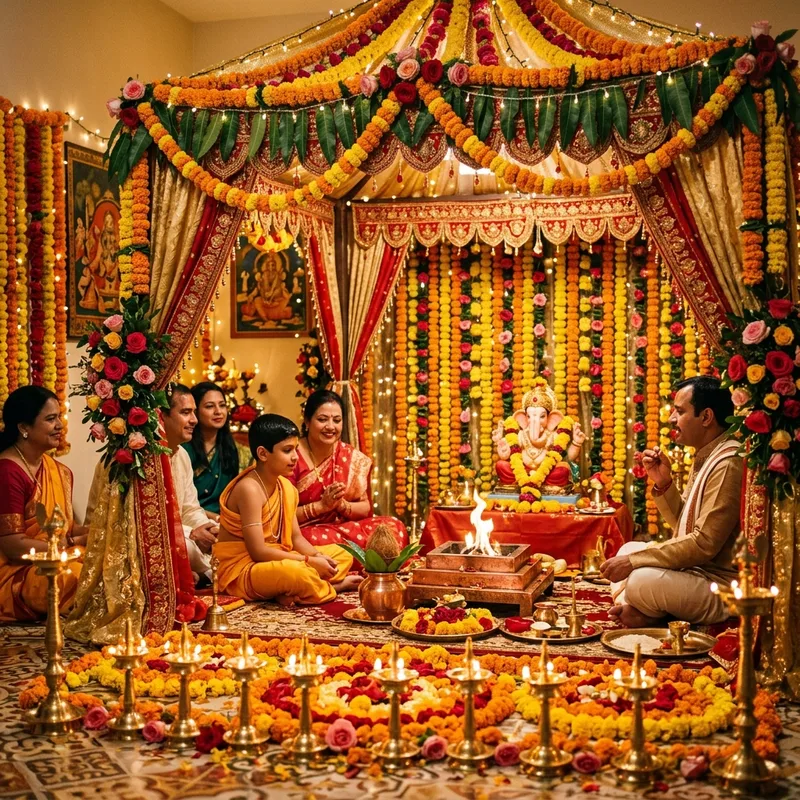
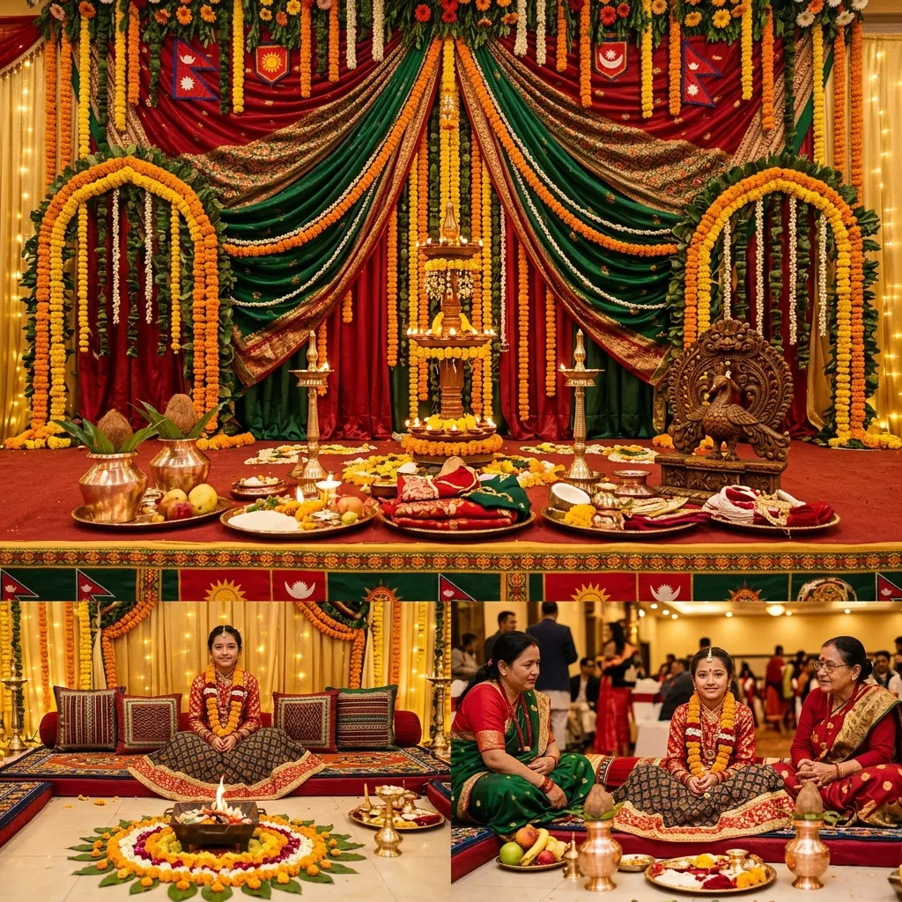
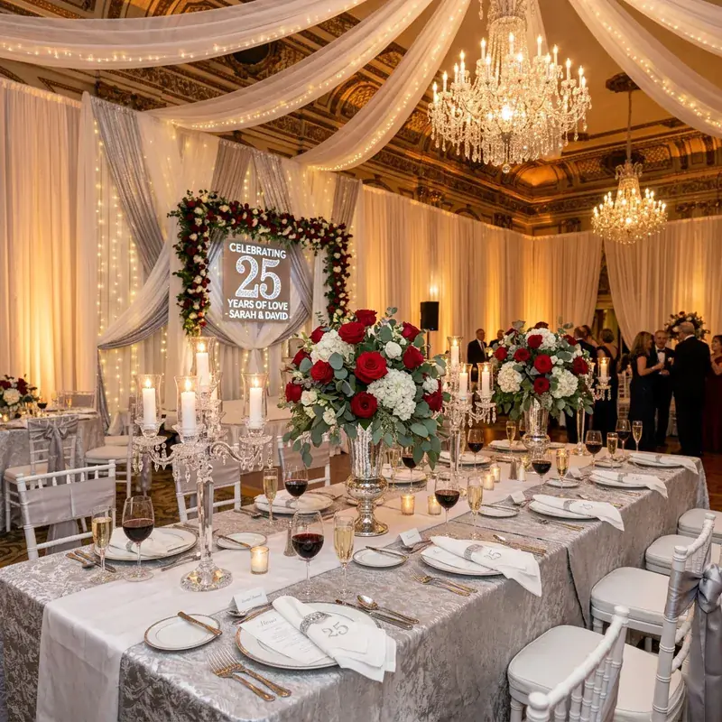

Filter through our past event decorations across Washington DC, Maryland, and Virginia. Click any project to view full details.

Germantown, MD

Germantown, MD
Rockville, MD

Rockville, MD

Bethesda, MD

Gaithersburg, MD

Silver Spring, MD

Fairfax, VA

Tysons, VA

Washington, DC

Germantown, MD

Frederick, MD
Let us bring your vision to life with our premium decoration services. Contact us today for a personalized consultation.
Contact Us Now